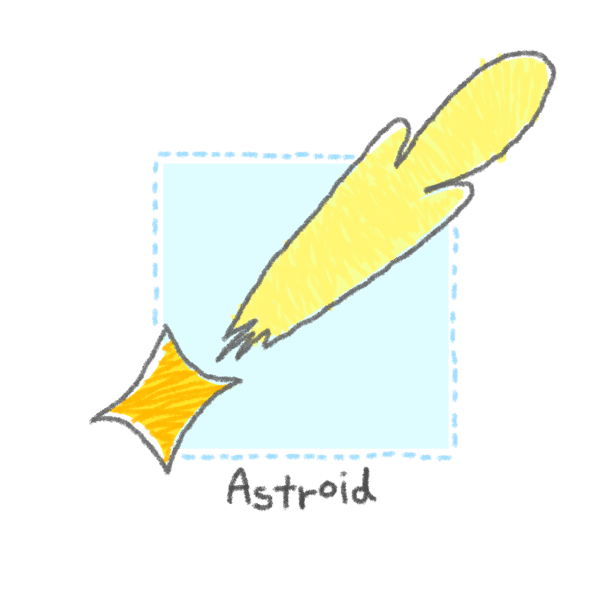

Starting a blog is always a lot of fun.

About me
Hi, as I said at the main page, I am student at Seoul Science High School, studying math, computer science and physics. I’m interested at homotopy type theory, formal verification and cosmology, and so on. Currently, I’m studying type theory, and proof assistant, such as Lean and Coq.
Purpose of blogging and what will I post
Sharing my thoughts and summarizing the materials I’ve studied through blog posts provides me with motivation and encourages me to approach life with greater enthusiasm. The upcoming blog posts will cover the following topics:
Personal Project Promotion
I am currently working on various projects in various fields such as “모두의 OCW” (Everyone’s OCW), study on ATP(Automated Theorem Proving), and pygame projects etc. I plan to promote and provide brief introductions to these projects. There are many exciting projects, so be sure to check them out when they are published.
Recent Research Trends Review
In any field I am studying (formal verification, mathematics, game programming, physics - especially cosmology), if there are noteworthy recent studies worth sharing, I will read and summarize research papers and results to present in informative posts.
My Educational Values
Education is a strong passion of mine, and I aspire to provide quality education to young students in the future. The “Everyone’s OCW” project also aligns with this goal. Establishing educational values and writing about them will likely be personally rewarding and beneficial.
Various Well-Organized Posts
Quality content improves with each post! Even if the content doesn’t specifically pertain to math or science, if I believe my arguments or various news items are worth sharing with others, I will organize them effectively and share them here.
With that said, I am excited for the journey ahead!